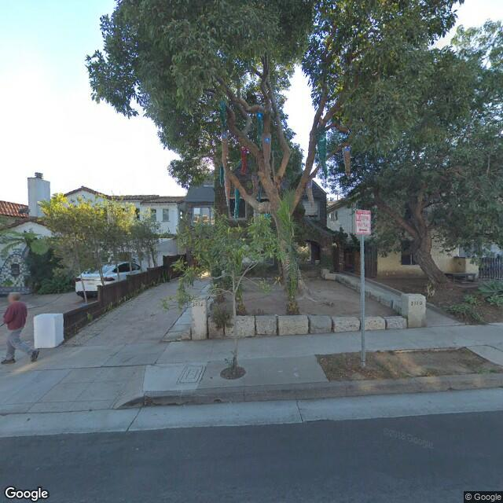
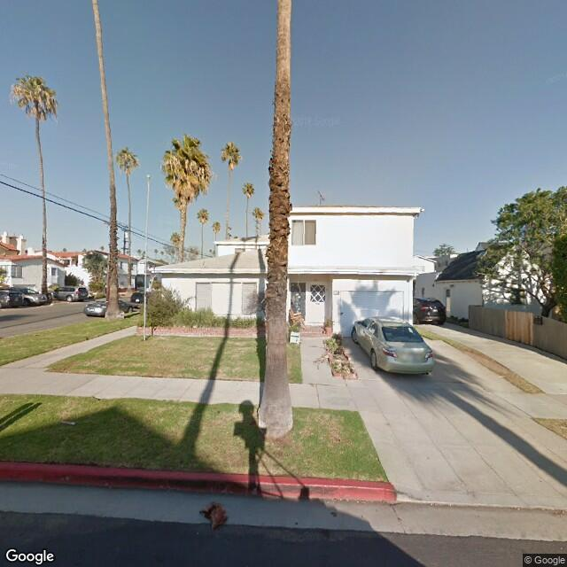

2.2.10. Soft-story Building Classifier¶
The Soft-story Building Classifier is a module built upon the Generic Image Classifier module.
The module is shipped with BRAILS, so you don’t have to install it standalone if you’ve installed BRAILS following the Installation instruction.
It takes a list of street view images of buildings as the input, and classify the buildings into two categories: soft-story building and other building.
2.2.10.1. Use the module¶
A pretrained model is shipped with BRAILS. So you can use it directly without training your own model.
The first time you initialize this model, it will download the model from the internet to your local computer.
The images used in the example can be downloaded from here.
# import the module
from brails.modules import SoftstoryClassifier
# initilize a soft-story classifier
ssModel = SoftstoryClassifier()
# define the paths of images in a list
imgs = ['image_examples/Softstory/Others/3110.jpg',
'image_examples/Softstory/Softstory/901.jpg']
# use the model to predict
predictions = ssModel.predict(imgs)
The predictions look like this:
Image : image_examples/Softstory/Others/3110.jpg Class : others (96.13%)
Image : image_examples/Softstory/Softstory/901.jpg Class : softstory (96.31%)
Results written in file softstory_preds.csv
Sample images used in this example are:

Fig. 2.2.14 image_examples/Softstory/Others/3110.jpg Non-Soft-story Building¶ |

Fig. 2.2.15 image_examples/Softstory/Softstory/901.jpg Soft-story Building¶ |
Note
The classifier takes an image as the input and will always produce a prediction. Since the classifier is trained to classify only a specific category of images, its prediction is meaningful only if the input image belongs to the category the model is trained for.
2.2.10.2. Retrain the model¶
You can retrain the existing model with your own data.
# Load images from a folder
ssModel.loadData('folder-of-images')
# Re-train it for only 1 epoch for this demo. You can increase it.
ssModel.retrain(initial_epochs=1)
# Test the re-trained model
predictions = ssModel.predict(imgs)
# Save the re-trained model
ssModel.save('myCoolNewModelv0.1')